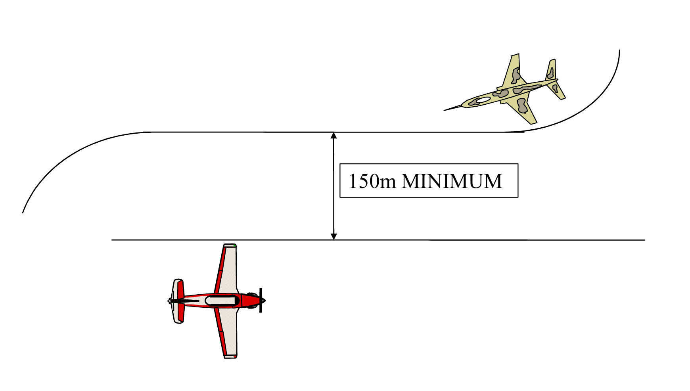
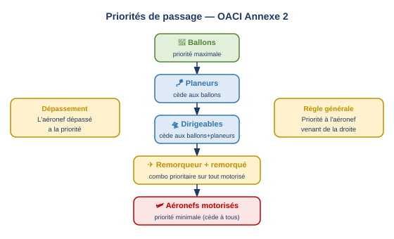
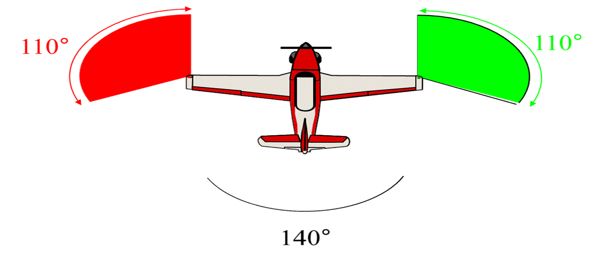
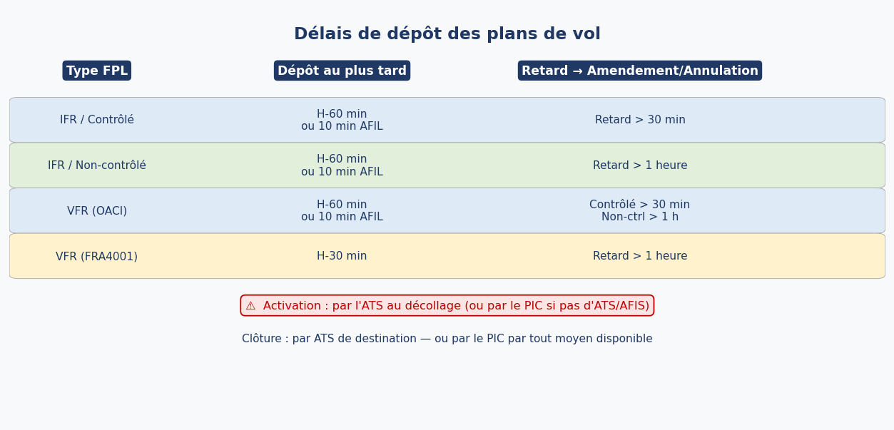
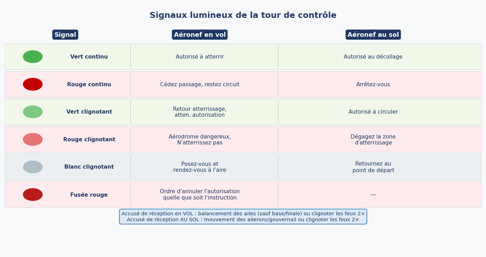
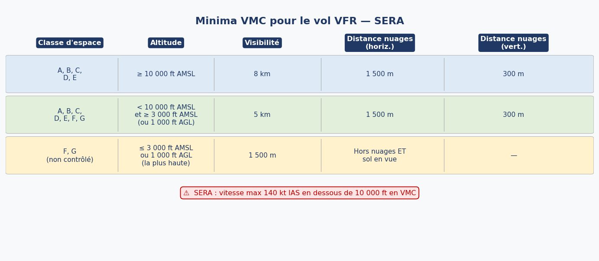

1. Cadre juridique — Convention de Chicago, Art. 12
Les Règles de l'Air trouvent leur fondement dans l'Article 12 de la Convention de Chicago (1944). Chaque État contractant s'engage à adopter des mesures pour que tout aéronef survolant son territoire, ainsi que tout aéronef immatriculé sous son pavillon où qu'il se trouve, respecte les règles applicables à cet endroit.
En Europe, la mise en œuvre pratique des Règles de l'Air est confiée à l'EASA via le règlement SERA (Standardised European Rules of the Air), qui transpose l'Annexe 2 OACI en droit européen avec quelques spécificités.
2. Responsabilités du Commandant de Bord (PIC)
Le Commandant de Bord (PIC — Pilot In Command) est responsable de la conduite sûre du vol, qu'il tienne lui-même les commandes ou non. Cette responsabilité est permanente et inaliénable.
2.1 Obligations fondamentales
Le respect des Règles de l'Air est obligatoire, sauf si des impératifs de sécurité immédiate imposent d'y déroger. Le PIC doit notamment :
- S'être familiarisé avant le vol avec les rapports météorologiques disponibles.
- Avoir vérifié les besoins en carburant pour accomplir le vol.
- Avoir défini des actions alternatives si le vol ne peut être achevé comme prévu.
- Ne jamais voler sous l'influence d'une substance psychoactive (alcool, drogues, médicaments altérant les facultés).
2.2 Sanctions applicables
La violation des Règles de l'Air peut entraîner trois types de sanctions, cumulables :
- Professionnelle — suspension ou retrait de licence.
- Pénale — amende ou emprisonnement.
- Militaire — sanctions disciplinaires (pour le personnel militaire).
3. Protection des personnes et des biens
Un aéronef ne doit pas être utilisé de façon imprudente ou négligente de nature à mettre en danger la vie ou les biens d'autrui.
3.1 Hauteurs minimales de survol
3.1.1 Vol VFR (règles de vol à vue)
- 500 ft au-dessus du sol ou de la mer (règle générale).
- 1 000 ft au-dessus des zones peuplées (villes, agglomérations), dans un rayon de 600 m autour de l'obstacle le plus élevé.
3.1.2 Vol IFR (règles de vol aux instruments)
- 1 000 ft dans un rayon de 8 km (5 NM) autour de la position estimée.
- 2 000 ft en zone montagneuse dans un rayon de 8 km (5 NM) — la zone montagneuse correspond à ±3 000 ft dans un rayon de 10 NM.
3.1.3 Spécificités françaises (FRA4001)
La réglementation française prévoit des hauteurs minimales plus contraignantes selon le type de turbine et la taille de l'agglomération :
| Zone / situation | Turbopropulseur mono | Turbopropulseur multi / Turboréacteur |
|---|---|---|
| Autoroute | 1 000 ft | 3 300 ft |
| Agglomération < 1 200 m | 1 650 ft | 3 300 ft |
| Agglomération 1 200 – 3 600 m | 3 300 ft | |
| Agglomération ≥ 3 600 m | 5 000 ft | |
| Paris P23 | 6 500 ft | |
3.2 Choix des niveaux de croisière
L'expression des niveaux de vol dépend du calage altimétrique utilisé :
- Flight Level (FL) — calage standard à 1 013,25 hPa.
- Altitude — calage QNH.
- Hauteur (Height) — calage QFE (au-dessus du terrain de référence).
3.3 Zones interdites et réglementées
Les aéronefs ne peuvent survoler les zones interdites ou réglementées (dont l'existence a été dûment publiée) qu'avec l'autorisation de l'État concerné.
3.4 Activités nécessitant une autorisation ATS
Les activités suivantes requièrent toutes une autorisation ou un avis de l'unité ATS (Air Traffic Service) compétente :
- Largage ou pulvérisation depuis un aéronef en vol.
- Remorquage d'un aéronef ou d'un autre objet.
- Descentes en parachute (hors urgence).
- Vol acrobatique (Acrobatic flight).
- Vol en formation (Formation flight).
- Opération de drones (UAV) et de ballons.
3.5 Vol en formation — règles spécifiques
- La formation est traitée comme un aéronef unique vis-à-vis du contrôle aérien.
- La séparation entre aéronefs est sous la responsabilité du leader de la formation.
- Chaque membre maintient une distance ≤ 0,5 NM latéralement et ≤ 100 ft verticalement par rapport au leader.
4. Prévention des abordages (Avoidance of Collisions)
4.1 Proximité
Tout aéronef doit maintenir une distance minimale de 150 m vis-à-vis des autres aéronefs. Cette règle s'applique même lors d'une interception militaire.

4.2 Priorités entre catégories d'aéronefs

Règle générale : priorité à l'aéronef venant de la droite.
L'aéronef qui est dépassé a toujours la priorité.
4.3 Définition du dépassement
Un aéronef est en situation de dépassement lorsqu'il s'approche d'un autre aéronef par l'arrière, sur une ligne formant un angle inférieur à 70° par rapport à l'axe de l'aéronef dépassé. L'aéronef dépassé a la priorité absolue.
4.4 Priorités à l'atterrissage
- Aéronef en situation d'urgence ou de détresse (MAYDAY / PAN PAN).
- Aéronef en finale (circuit normal).
4.5 Aire de manœuvre (Aerodrome movement area)
Un aéronef doit s'arrêter à la position d'attente (holding position) — marquée d'une barre d'arrêt rouge si elle existe — et attend l'autorisation de s'aligner donnée par la tour (feux éteints sur la barre).
4.6 Vol aux instruments simulé
- Aéronef à double commande obligatoire.
- Le siège de droite doit être occupé par un pilote qualifié, avec vue extérieure non obstruée (safety pilot).
4.7 Manœuvres à proximité d'un aérodrome
- Surveiller la fréquence de la tour pour connaître le trafic entrant/sortant.
- Éviter les zones de circuit ou prendre contact avec la tour.
- Effectuer tous les virages vers la gauche (sauf instruction contraire).
- Décoller et atterrir vent de face (sauf instruction contraire).
5. Feux réglementaires
5.1 Types de feux
- Feu anticollision (beacon) : blanc ou rouge — stroboscopique ou tournant.
- Feux de navigation : rouge (gauche/bâbord), vert (droite/tribord), blanc (arrière).
5.2 Obligation d'allumage
- De nuit : feux anticollision et feux de navigation obligatoires dès que les moteurs tournent.
- De jour : feux anticollision (beacon) obligatoires dès que les moteurs tournent.

6. Équipements pour opérations de nuit
Pour un avion opérant de nuit, les équipements suivants doivent être installés :
- Tous les équipements répondant aux exigences d'éclairage en vol et sur l'aire de manœuvre.
- 2 projecteurs d'atterrissage, ou 1 projecteur à 2 filaments indépendants.
- Éclairage de tous les instruments et équipements essentiels du poste de pilotage.
- Éclairage dans tous les compartiments passagers.
- Une lampe de poche indépendante par poste d'équipage.
7. Plan de vol (Flight Plan)
7.1 Types de plans de vol
- Plan de vol déposé (Filed flight plan) : déposé auprès de l'ATS sans modification.
- Plan de vol courant (Current flight plan) : inclut les modifications survenues après dépôt (amendements).
- RPL (Repetitive Flight Plan) : plans IFR récurrents (≥ 10 fois ou quotidiennement sur ≥ 10 jours consécutifs). Note : EUROCONTROL a supprimé le RPL depuis le 27 mars 2020.
7.2 Cas d'obligation du plan de vol
EASA (SERA) — plan de vol obligatoire pour :
- Tout vol contrôlé : VFR ou IFR dans un espace contrôlé.
- Vol IFR dans un espace avec service consultatif (advisory service).
- Vol dans des zones désignées pour faciliter les services d'information et d'alerte.
- Vol dans des zones désignées pour faciliter la coordination civilo-militaire.
- Vol traversant des frontières internationales.
- Tout vol de nuit non local.
FRA4001 (France) — plan de vol obligatoire pour : vol IFR, vol VFR de nuit (hors local), vol VFR maritime, vol VFR en zones inhospitalières, vol VFR franchissant une frontière.
7.3 Délais de dépôt

7.4 Gestion des retards
- Vol contrôlé en retard de plus de 30 min : FPL à amender ou annuler.
- Vol non contrôlé en retard de plus de 1 heure : FPL à amender ou annuler.
- FRA4001 : tout retard > 30 min → amender ou annuler.
7.5 Activation du plan de vol
- Activé automatiquement par l'ATS au décollage.
- Le PIC l'active lui-même si l'aérodrome de départ n'a pas d'unité ATS ou AFIS.
7.6 Modifications en vol
Toute modification (niveau, route, destination) doit être signalée à l'ATS dès que possible.
7.7 Clôture du plan de vol
Le plan de vol est clôturé par l'ATS de l'aérodrome de destination. En l'absence d'ATS, le PIC doit clôturer par les moyens les plus rapides. Le compte rendu d'arrivée contient : indicatif d'appel / type d'appareil, aérodrome de départ, aérodrome d'arrivée, heure d'arrivée.
8. Signaux
8.1 Signaux de détresse
La détresse (Distress) signale un danger grave immédiat nécessitant une assistance immédiate :
- MAYDAY × 3 à la radio.
- SOS en morse (· · · — — — · · ·).
- Fusée rouge.
- Fusée rouge avec parachute.
- Transpondeur SSR code 7700.
8.2 Signaux d'urgence
L'urgence (Urgency) signale une situation préoccupante ne nécessitant pas d'assistance immédiate :
- PAN PAN × 3 à la radio.
- XXX en morse.
- Allumage/extinction des phares d'atterrissage.
- Allumage/extinction des feux de navigation.
8.3 Fréquences d'urgence
9. Signaux lumineux de la tour de contrôle

Blanc clignotant (en vol) : atterrir ET se rendre à l'aire de trafic (pas juste atterrir).
Fusée rouge = annule toute autorisation précédente, quelle qu'elle soit.
9.1 Accusé de réception des signaux lumineux
Un aéronef doit accuser réception d'un signal lumineux de la tour :
- En vol, de jour : balancement des ailes (sauf en base ou en finale).
- En vol, de nuit : clignoter les feux d'atterrissage ou de navigation 2 fois.
- Au sol, de jour : mouvement des ailerons ou de la gouverne de direction.
- Au sol, de nuit : clignoter les feux d'atterrissage ou de navigation 2 fois.
10. Signaux visuels au sol (Signal Area)
10.1 Panneaux de la signal area
| Panneau | Signification |
|---|---|
| Croix rouge sur fond rouge (Red panel, yellow cross) | Atterrissages interdits |
| Bande jaune sur fond rouge (Red panel, yellow stripe) | Précautions particulières à l'approche et à l'atterrissage |
| Haltère blanc (White dumbbell) | Roulage, décollage, atterrissage uniquement sur piste et voies de circulation |
| Haltère blanc avec bandes noires | Décollage et atterrissage sur piste uniquement ; le roulage peut se faire ailleurs |
| Forme en T blanc | Sens de décollage/atterrissage à utiliser (QFU en service) |
| Double croix blanche | Vols de planeurs en cours — prudence |
| Flèche à angle droit (white) | Circuit main droite obligatoire |
| Croix blanche ou jaune | Piste ou voie fermée (jaune pour taxiway/aire) |
11. Conditions VMC pour le vol VFR
Le vol VFR est autorisé si les conditions météorologiques permettent de respecter les minima VMC (Visual Meteorological Conditions) définis en termes de visibilité et de distances aux nuages.

Sous 10 000 ft, au-dessus de 3 000 ft AMSL ou 1 000 ft AGL : 5 km / 1 500 m / 300 m.
Espace non contrôlé (F/G) ≤ 3 000 ft AMSL ou ≤ 1 000 ft AGL : 1 500 m / hors nuages ET sol en vue.
SERA : vitesse max 140 kt IAS en VMC sous 10 000 ft.